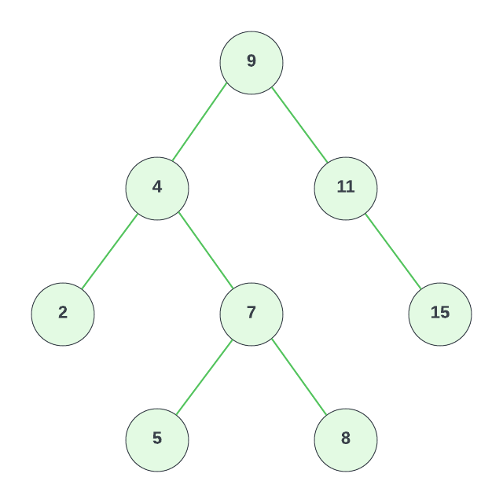

Binary Search Tree Implementation
In this lesson, we will implement a binary search tree in TypeScript. We will start by creating a Node class, which will represent each node in the tree. Each node will have a value, a left property, and a right property. The left and right properties will point to other nodes, or be undefined if there is no left or right child.
export class Node {
value: number;
left: Node | undefined = undefined;
right: Node | undefined = undefined;
constructor(value: number) {
this.value = value;
}
}
Next, we will create a BinarySearchTree class. This class will have a root property, which will point to the root node of the tree. Initially, the root node will be undefined.
export class BinarySearchTree {
root: Node | undefined = undefined;
}
insert Method
Next, we will implement the insert method. This method will take a value as an argument, and insert a new node with that value into the tree.
insert(value: number): void {
const newNode = new Node(value);
if (this.root === undefined) {
this.root = newNode;
} else {
let currentNode = this.root;
while (true) {
if (value < currentNode.value) {
if (!currentNode.left) {
currentNode.left = newNode;
return;
}
currentNode = currentNode.left;
} else {
if (!currentNode.right) {
currentNode.right = newNode;
return;
}
currentNode = currentNode.right;
}
}
}
}
We start by creating a new node with the given value.
If the tree is empty, we set the root node to be the new node. Otherwise, we start at the root node, and traverse the tree until we find a node without a left or right child.
If the new value is less than the current node's value, we move on to the left child. If the new value is greater than or equal to the current node's value, we move on to the right child.
We continue this process until we find a node without a left or right child, and then we insert the new node at that location.
lookup Method
Next, we will implement the lookup method. This method will take a value as an argument, and return the node with that value if it exists in the tree. If the value does not exist in the tree, we will return undefined.
lookup(value: number): Node | undefined {
let currentNode = this.root;
if (!currentNode) {
return undefined;
}
while (currentNode) {
if (value < currentNode.value) {
currentNode = currentNode.left;
}
else if (value > currentNode.value) {
currentNode = currentNode.right;
}
else if (value === currentNode.value) {
return currentNode;
}
}
return undefined;
}
We set the current node to be the root node.
If the tree is empty, we return undefined. Otherwise, we traverse the tree until we find a node with the given value.
If the value is less than the current node's value, we move on to the left child. If the value is greater than the current node's value, we move on to the right child. If the value is equal to the current node's value, we return the current node.
If we reach a node that does not have a left or right child, we return undefined.
remove Method
Next, we will implement the remove method. This method will take a value as an argument, and remove the node with that value from the tree.
remove(value: number): void {
function removeNode(
node: Node | undefined,
value: number
): Node | undefined {
if (node === undefined) {
return undefined;
}
if (value < node.value) {
node.left = removeNode(node.left, value);
return node;
}
else if (value > node.value) {
node.right = removeNode(node.right, value);
return node;
}
else {
if (node.left === undefined) {
return node.right;
} else if (node.right === undefined) {
return node.left;
}
let tempNode = node.right;
while (tempNode.left !== undefined) {
tempNode = tempNode.left;
}
node.value = tempNode.value;
node.right = removeNode(node.right, tempNode.value);
return node;
}
}
this.root = removeNode(this.root, value);
}
This one is pretty tough. We start by creating a helper function called removeNode. This function will take a node and a value as arguments, and return the node with the given value removed from the tree.
If the node is undefined, we return undefined. Otherwise, we traverse the tree until we find the node with the given value.
If the value is less than the current node's value, we move on to the left child. If the value is greater than the current node's value, we move on to the right child. If the value is equal to the current node's value, we have found the node we want to remove.
There are three cases we need to consider:
- The node has no children or only one child
- The node has two children
- The node is the root node
Case 1: Node with no child or only one child
If the node has no children or only one child, we can simply return the node's left or right child. This will remove the node from the tree.
Case 2: Node with two children
If the node has two children, we need to find the smallest value in the right subtree. This value will be the node's successor. We will replace the node's value with the successor's value, and then remove the successor from the tree.
Case 3: Node is the root node
If the node is the root node, we need to replace the root node with the successor. We will replace the root node's value with the successor's value, and then remove the successor from the tree.
printTree Method
Finally, we will implement the printTree method. This method will print the tree in a human-readable format.
printTree(): void {
function printNode(node: Node | undefined): void {
if (node === undefined) {
return;
}
node.left && printNode(node.left);
console.log(node.value);
node.right && printNode(node.right);
}
printNode(this.root);
}
Binary Search Tree Runtime Analysis
BST's are very efficient data structures. They are very fast at inserting, looking up, and deleting values and have a runtime of O(log n) for each of these operations except for printing the tree, which has a runtime of O(n). This is because we have to visit every node in the tree to print it.
| Operation | Runtime |
|---|---|
| Insert | O(log n) |
| Lookup | O(log n) |
| Delete | O(log n) |
| O(n) |
Binary Search Tree Example

const bst = new BinarySearchTree();
bst.insert(9);
bst.insert(4);
bst.insert(11);
bst.insert(2);
bst.insert(7);
bst.insert(15);
bst.insert(5);
bst.insert(8);
This will create the tree.
We can use the lookup method to find a node in the tree. Let's find the node with the value 4 and log it.
console.log(bst.lookup(4));
This will log the following:
{
value: 4,
left: { value: 2, left: undefined, right: undefined },
right: { value: 7, left: [Node], right: [Node] }
}
You can see that the node with the value 4 has a left child with the value 2, and a right child with the value 7.
Let's remove the node with the value 7 from the tree.
bst.remove(7);
Now lookup 4 again:
console.log(bst.lookup(4));
This will log the following:
{
value: 4,
left: { value: 2, left: undefined, right: undefined },
right: { value: 8, left: [Node], right: undefined }
}
You can see that the node with the value 4 now has a right child with the value 8 instead of 7. So it essentially replaced the node with the one that was to the right of it.
Let's print the tree to make sure it looks like the one we created.
bst.printTree();
This will print it in order minus the node with the value 7, which we removed.
2
4
5
8
9
11
15
This may have seemed overwhelming. Don't expect to master this in a day. It takes time and practice. Go through this article again and try to understand it better. You might also try to implement this data structure yourself as well as others without looking at the exercises.